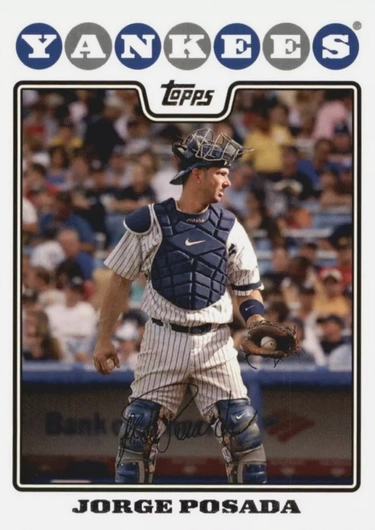

Jorge Posada "Jorgie"
Career Highlights & Facts
(Facts are AI-generated and may require verification)
- Selected in the 24th round of the amateur draft.
- Earned 5 Silver Slugger Awards as a primary backstop.
- One of only 2 players at the position to hit 30 home runs in a single season for a storied club.
Would you like to find out more about Jorge Posada?
Puerto Rico and Baseball
Scott Dominiak
In major-league baseball when a team dominates its opponents for several years, it’s usually because it has a solid nucleus of players. For instance, in the early 1970s in the American League the Oakland Athletics captured three successive World Series. In the National League the Cincinnati Reds were a powerhouse. Both clubs had a strong nucleus of players who produced season after season.
The same could be said for the New York Yankees from 1996 to 2011. The Yankees were in the playoffs in 15 of those 16 seasons and won five World Series. At the heart of those Yankee teams were four players,
Derek Jeter
, shortstop;
Andy Pettitte
, pitcher (though he spent 2004 through 2006 pitching for Houston);
Mariano Rivera
, relief pitcher; and Jorge Posada, catcher.
Posada had an illustrious 17-year career with New York, 1995-2011. He was an the All-Star five times, won the Silver Slugger Award five times, and played on five World Series champions. During the catcher’s career, he batted .273, hit 275 home runs, and drove in 1,065 runs.
In 2003 Posada finished third in voting for the American League Most Valuable Player Award after hitting 30 home runs, batting .281, and posting 101 RBIs. Aside from
Yogi Berra
, he was only the second Yankee catcher to hit 30 home runs in a season. Posada’s best season was 2007, when he hit .338 and batted in 90 runs at the age of 35.
The switch-hitter was only the fifth major-league catcher with at least 1,500 hits, 350 doubles, 275 homers, and 1,000 RBIs. He produced more RBIs and home runs than any other catcher in baseball from 2000 to 2011.
The Puerto Rican native was born on August 17, 1971, in the Santurce district of San Juan to a Cuban father, Jorge Posada Sr., who fled to Puerto Rico to escape Fidel Castro’s regime, and a Dominican mother. His father worked in sales for Richardson-Vicks, a pharmaceutical company. Also, for 40 years he was a major-league scout for numerous teams: the Yankees, the Houston Astros, the Toronto Blue Jays, the Atlanta Braves, and the Colorado Rockies. His distant (at most) kinsman,
Leo Posada
, played for the Kansas City Athletics. Leo helped his son develop his baseball skills and instill the drive to make it to the major leagues, and the two continued to work together over the years. (Leo Posada’s SABR bio refutes the commonly held belief that he was Jorge Jr.’s uncle.)
Young Jorge was small for his age until later in high school. The serious-minded father always wanted his son to become a ballplayer and used tough love in raising him. For instance, at age 12 he had Jorge at the start of summer move a huge pile of dirt on the driveway of their middle-class home to the backyard and spread it out to make it level for a baseball field. He gave him a wheelbarrow and shovel and told him to have it done by the end of summer. Jorge had it done in two weeks, and it helped him to develop his muscles and hands for batting. It also taught him to use his stubbornness, a trait of his father, to do hard jobs without complaining. Jorge’s nurturing mother would often tell her husband not to be so hard on their son, but it was usually to no avail.
Jorge Sr. often rewarded his son for doing strenuous chores by taking him to the ballfield to hit and field balls. Junior learned both to respect and fear his father. Almost everything they ever did together or talked about centered on baseball, which had become the son’s passion.
As a teenager, young Posada attended Alejandrino High School and played several sports, including baseball, basketball, and volleyball. He was an all-star shortstop for the baseball team in 1988-89. The switch-hitting Posada was drafted by the Yankees in the 43rd round of the amateur draft in 1989 but opted to go to college. Because his SAT scores were not high enough for him to get into a four-year college, Posada accepted a baseball scholarship to Calhoun Community College in Decatur, Alabama. The head coach, Fred Frickie, recruited the high-school graduate without scouting him.
The Yankees came calling again in 1990, drafting Posada in the 24th round. New York scout Leon Wurth rated Posada’s bat and attitude highly. He didn’t sign right away, and played again for Calhoun in 1991, gaining all-conference honors. Posada signed a $30,000 bonus contract with the Yankees on May 24, 1991.
In 1991 Posada played 71 games at second base for Oneonta in the Short Season New York-Penn League and hit .235 with four home runs. The Yankees felt Posada lacked speed, and began grooming him as a catcher in 1992 at Greensboro in the Class-A South Atlantic League, where he batted .277 with 12 home runs and 58 RBIs. Initially, Posada was reluctant to become a catcher, a position he believed was not his strong suit.
In 1993 with Prince William of the Class-A Carolina League, Posada batted .259 with 17 home runs. He spent the next three seasons with Triple-A Columbus (International League), and had a one-game call-up to the Yankees in 1995. In 1996 Posada was up briefly three times in April, May, and June, and was called up for good at the end of the season.
In 1997 Posada solidified his position on the Yankees’ roster by backing up catcher
Joe Girardi
, his mentor. The Puerto Rican played in 60 games and batted .250 with 6 home runs and 25 RBIs. He helped the team to the postseason, which the Yankees lost to the Cleveland Indians. After the season, the club sought to trade Posada and
Mike Lowell
to the Montreal Expos for star pitcher
Pedro Martinez
, but the deal did not work out as Martinez went to the Boston Red Sox.
After the season Posada hired a personal trainer to help improve his physical conditioning. In 1998 his playing time increased to 111 games and he batted .268 with 17 home runs and 63 RBIs. The Yankees qualified for the postseason for the fourth consecutive year, and in the World Series they swept the San Diego Padres in four games.
For the 1999 season Posada requested a salary of $650,000 but the Yankees renewed his contract at $350,000. The first half of the season the catcher struggled at the plate, hitting.210, but in the second half he found his swing and hit .285, for a final average of .245. He caught in 109 games. Posada caught two of the four World Series games as the Yankees swept the Atlanta Braves.
After the season, Girardi became a free agent, and Posada became the Yankees’ full-time catcher in 2000. The switch-hitter blossomed at the plate, hitting .287 with 28 homers and 86 RBIs. Manager
Joe Torre
named Posada to his first All-Star Game. Again, the Yankees made it to the World Series as they defeated their crosstown rival, the New York Mets, in five games. Posada won the first of his five Silver Slugger Awards and the Thurman Munson Award, for baseball accomplishments and philanthropic work in New York.
For the budding star, life was good, and he loved playing for the Yankees under Torre. He looked at the team and the organization as family.
Posada had another stellar year offensively in 2001 as he again made the All-Star team, batted .277, hit 22 home runs, and had 95 RBIs. He won his second Silver Slugger Award and received the Milton Richman “You Gotta Have Heart” Award from the New York Chapter of the Baseball Writers Association of America. But Posada also led the league with 18 passed balls and 11 errors. The Yankees World Series winning streak was snapped by the Arizona Diamondbacks in seven games.
In 2002 Posada again led all catchers in errors (12), but he offset that by hitting .268 with 20 homers and 99 RBIs. He won another Silver Slugger Award. The Yankees lost to the Anaheim Angels in the American League Division Series.
Posada had an outstanding season in 2003 as he recorded career highs in home runs (30), RBIs (101), and walks (93). The 30 homers tied Berra’s record for Yankee catchers. Posada batted .281 and was fifth in the league in on-base percentage at .405. He won his fourth consecutive Silver Slugger Award and was third in the MVP voting behind
Alex Rodriguez
and
Carlos Delgado
. The Yankees again lost the World Series, to the Florida Marlins.
In 2004 the Yankees had a three-games-to-none lead over the Boston Red Sox in the ALCS before losing four straight. Posada again had a fine year, hitting .272 with 21 home runs and 81 RBIs. He received the “Good Guy” Award from the New York Press Photographers.
The 33-year-old Posada posted a .262 batting average in 2005 with 19 home runs and 71 RBIs. He was nominated by the Yankees for the Roberto Clemente Award. New York fell short of the World Series title for the fifth year in a row by succumbing to the Angels again in the ALDS. He improved at bat in 2006, hitting.277 with 23 homers and 93 RBIs. Defensively, he improved his percentage of throwing out runners trying to steal, but again led the league in passed balls.
In 2007 the Yankees catcher won his fifth and final Silver Slugger Award as he posted career highs in batting average (.338), hits (171), and doubles (42). Posada also clubbed 20 homers and knocked in 90 runs. He had caught at least 120 games each season from 2000 through 2007. He finished sixth in the MVP voting. He was nominated again for the Roberto Clemente Award, and was named one of the finalists. He also received the Bart Giamatti “Caring” Award from MLB’s Baseball Assistance Team. After the season he opted for free agency. The Mets offered the star catcher a five-year contract, but he turned it down for a four-year deal at $52 million with the Yankees.
In 2008 Posada was injured and out of action for the month of May, then went on the disabled list in late July for the first time in his career. He had shoulder surgery and missed the rest of the season. The Yankees finished in third place, the first and only time the team did not qualify for the postseason during Posada’s career.
On April 16, 2009, Posada hit the first home run in the new Yankee Stadium. It was hit off left-hander
Cliff Lee
of the Cleveland Indians. On September 15 against Toronto Posada was ejected from the game when he bumped and taunted pitcher
Jesse Carlson
, who had thrown a pitch behind him. After being ejected, Posada charged Carlson and a bench-clearing brawl erupted. Both players received three-game suspensions. (Posada was ejected six times during his career.) Recovered from his surgery, Posada caught in 100 games and batted .285 with 22 home runs and 81 RBIs. He appeared in all six World Series games as hit two home runs as the Yankees defeated the Philadelphia Phillies for their first Series triumph in nine years. Posada received the Ted Williams Community Award from the Ted Williams Museum and Hitters Hall of Fame.
One of the highlights of the 2010 campaign for Posada was his 11th straight Opening Day start at catcher. In June during an interleague series against Houston, he became the first Yankee since
Bill Dickey
in 1937 to hit grand slams in consecutive games. He got his 1,000th career RBI in a game against the Kansas City Royals on July 23. But at the age of 38, his offensive output fell off: .248, 18 homers, and 57 RBIs in 120 games. Still, the New York BBWAA made him the winner of the Willie, Mickey, and the Duke Award. The Texas Rangers beat the Yankees in the ALCS.
After the season, Posada had arthroscopic surgery on his left knee to fix a torn meniscus. Because of his injury and his declining defensive performance, Posada became the Yankees’ designated hitter in 2011, while
Russell Martin
became the full-time catcher.
“When you take me out from behind the plate, you’re taking my heart and my passion,” Posada wrote with Gary Brozek in his book,
The Journey
Home: My Life in Pinstripes,
published in 2015.
In the spring of 2011, Posada was in a slump at the plate, and on May 14 against the Red Sox, manager Girardi moved him to ninth in the batting order. Posada felt this was an insult and asked to be removed from the lineup. He told reporters that he needed to clear his head, and that he had stiffness in his back. Posada later told management that he regretted what he did.
“I felt I wasn’t being treated right, that people weren’t always being straightforward with me as I wanted them to be, or treated me as I deserved to be treated, and I exploded,” Posada wrote.
In June Posada ended his slump, batting.382 for the month, but by August he was removed from the everyday lineup because he was hitting only .230. Against the Tampa Bay Rays on August 13, he made his first start since being benched and went 3-for-5 with a grand slam and six RBIs. It was Posada’s 10th grand slam and moved him into sixth place on the all-time Yankee list, passing Berra and
Mickey Mantle
. He finished the season with a .235 batting average, 14 home runs, and 44 RBIs.
In the Division Series against the Detroit Tigers, Posada batted .429 with six hits and an on-base percentage of .579 at DH. The Tigers won the series in five games. After the series Posada was asked by a reporter if this was the end of his career with the Yankees.
“I don’t want to look at it like that,” he said. “We lost, and we’ll see what happens in the offseason.”
During the interview, Posada became very emotional and left the room briefly to compose himself.
Girardi praised the 17-year veteran on his performance in the ALDS and his career. “This guy, when you look at what he did in this series, he was awesome,” the skipper said. “He’s had a tremendous career, and I’m sure he is going to continue to play, and I don’t know what’s going to happen.”
Girardi added, “But you talk about being proud of players – what he went through this year and what he gave us in the postseason, I don’t think there is a prouder moment that I’ve had of Jorge.”
That fall five or six teams expressed an interest in Posada, including Boston, but not the Yankees. Disappointed, in January of 2012, he retired as a player.
In 2013 Posada was a guest instructor during spring training, and on August 16, 2015, his number 20 was retired in a ceremony at Yankee Stadium.
Even though Posada loved playing for the Yankees, he had a reputation of whining occasionally throughout his career. One episode occurred at the start of the 2011 season when he complained about being the designated hitter rather than catching. He also was upset about being excluded from meetings with the catchers when discussing strategies under Girardi’s management. The veteran said he felt disrespected.
According to Mark Feinsand of the
New York Daily News
, Posada had a propensity to ignore Girardi’s instructions. He would occasionally disregard scouting reports and call pitches on the fly in defiance.
Supposedly, ill feelings began between Girardi and Posada stemmed from disagreements over catching strategies in 2005.
Posada wrote in his book that Torre was his “father on the field,” while Girardi was just a manager.
Under Girardi, he wrote, team unity deteriorated, and the open-door communication that Joe Torre had now seemed shut. Posada also criticized what he saw as a change in the clubhouse culture.
“Winning is such a fragile thing,” Posada wrote. “If you take away any element that supports it, it falls to the ground and shatters.”
The catcher wrote that he knew his career was probably over on October 6, 2011, when he came to the plate in the eighth inning in the final game of the ALDS against Detroit trailing 3-2 and grounded out. “I had no idea how finality can be,” he wrote. “I went down on my knees as if something incredibly heavy was crushing me. I put my head on the ground and wailed, shoulder-heaving sobs tearing at me.”
In the book Posada expressed bitterness about his retirement. But he said that the Yankee organization was good to him after he retired. At the home opener in 2012, the club asked him to throw out the opening pitch. He did so in front of 50,000 fans, and his father, who had ridden him hard as a child, caught it.
“In that moment things were back to how they had been,” he wrote. “Just my dad and me, tossing a ball around, both of us sharing a dream.”
In 2012 Posada was inducted into the Latin America International Sports Hall of Fame.
On the television show
CBS This Morning
in New York in 2015, Posada said he did not think players who used steroids should be allowed into the Hall of Fame.
“No, I don’t think it’s fair for the guys that have been in the Hall of Fame that played the game clean … I don’t think it’s fair,” Posada said. “I really don’t. I think the guys who need to be in the Hall of Fame need to be a player that played the game with no controversy.”
On January 21, 2000, Posada married Laura Mendez, an attorney, whom he had met three years earlier. They have has two children, Jorge Jr. and Paulina. Their son was born with craniosynostosis, a birth defect in which the plates of the skull fuse together to impede the growth of the brain, and which has required numerous surgeries.
The Posadas established the Jorge Posada Foundation to further research into the condition and provide emotional assistance to families with children affected by it. It also provides grants to help underwrite the costs of initial surgeries. Statistics show that one in 2,000 babies is born with this condition.
In 2006 Posada wrote
Play Ball!,
a children’s book. He was honored with the Mentor of the Year Award from Kids in Distressed Situations and Fashion Delivers. The couple co-wrote
Fit Home Team
, a family-health manual. They also wrote
The Beauty of Love: A Memoir of Miracles, Hope, and Healing
. The book describes their personal ordeals, and how they handled them after learning about their son’s condition. They received the Puerto Rican Family Foundation Excellence Award for their commitment to children, especially those affected by craniosynostosis. In 2007 Posada received the Parent Magazine Award.
In 2006 Posada was inducted into the Alabama Community College Hall of Fame, and his jersey number, 6, at Calhoun was retired.
As of 2016 the Posadas lived in Florida.
This biography is included in
“Puerto Rico and Baseball: 60 Biographies”
(SABR, 2017), edited by Bill Nowlin and Edwin Fernández.
In addition to the sources cited in the Notes, the author also consulted baseball-almanac.com, baseball-reference.com, jorgeposada.com/biography, latinsportshalloffame.com, and an article by Sherryl Connelly: “Yankee Great Jorge Posada Still Steamed…,”
New York Daily News
, May 8, 2015.
Jorge Posada and Gary Brozek,
The Journey Home: My Life in Pinstripes
(New York: HarperCollins Publishers, 2015), 336.
Posada and Brozek, 336.
Andrew Keh, “Posada Emotional After Loss,”
New York Times
, October 27, 2011.
Ibid.
Ibid.
Mark Feinsand, “Jorge Posada’s Feud With Joe Girardi Has Roots in 2005 Disagreement on Catching Strategy: Source,”
New York Daily News
, May 18, 2011.
Posada and Brozek, 309.
Posada and Brozek, 335.
Posada and Brozek, 339.
Posada and Brozek, 342.
Anthony Witrado, “Jorge Posada Risking His Own Legacy More Than A-Rod’s With PED, Yankees Comments,” Bleacher Report, May 14, 2015.
Full Name
Jorge Rafael Posada Villeta
Born
August 17, 1971 at Santurce, (P.R.)
Puerto Rico
Puerto Rico and Baseball
Career Totals
| WAR | AB | H | HR | BA | R | RBI | SB | OBP | SLG | OPS | OPS+ |
|---|---|---|---|---|---|---|---|---|---|---|---|
| 42.7 | 6092 | 1664 | 275 | .273 | 900 | 1065 | 20 | .374 | .474 | .848 | 121 |
Statistics via Baseball-Reference.com
The Original Clue